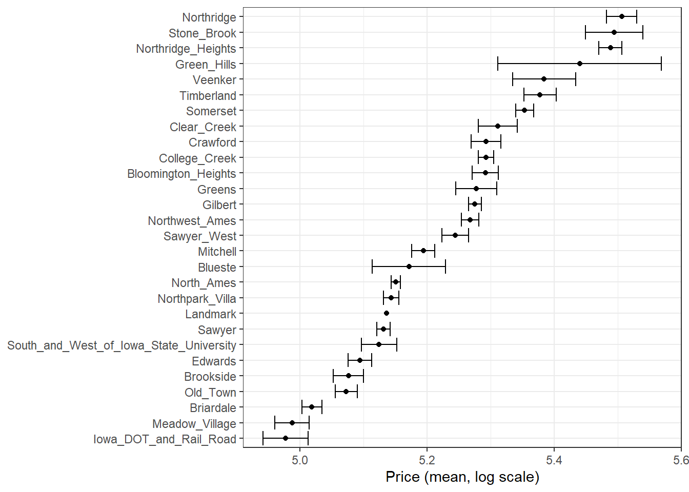
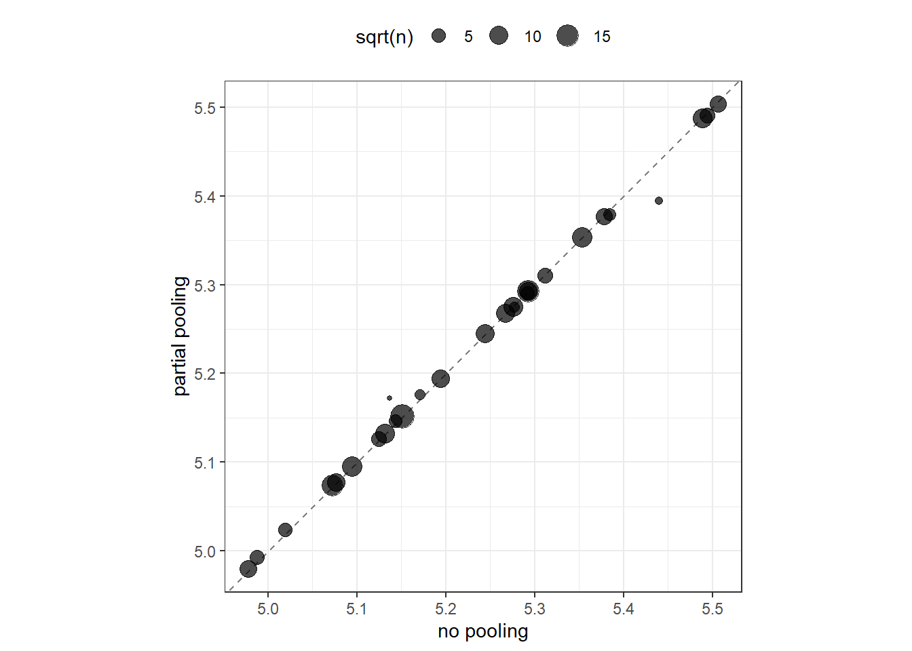

| Raw Data | TwoFmCon | Duplex | Twnhs | TwnhsE |
|---|---|---|---|---|
| OneFam | 0 | 0 | 0 | 0 |
| TwoFmCon | 1 | 0 | 0 | 0 |
| Duplex | 0 | 1 | 0 | 0 |
| Twnhs | 0 | 0 | 1 | 0 |
| TwnhsE | 0 | 0 | 0 | 1 |
17 Encoding Categorical Data
For statistical modeling in R, the preferred representation for categorical or nominal data is a factor, which is a variable that can take on a limited number of different values; internally, factors are stored as a vector of integer values together with a set of text labels.1 In Section 8.4.1 we introduced feature engineering approaches to encode or transform qualitative or nominal data into a representation better suited for most model algorithms. We discussed how to transform a categorical variable, such as the Bldg_Type in our Ames housing data (with levels OneFam, TwoFmCon, Duplex, Twnhs, and TwnhsE), to a set of dummy or indicator variables like those shown in Table 17.1.
Many model implementations require such a transformation to a numeric representation for categorical data.
Appendix A presents a table of recommended preprocessing techniques for different models; notice how many of the models in the table require a numeric encoding for all predictors.
However, for some realistic data sets, straightforward dummy variables are not a good fit. This often happens because there are too many categories or there are new categories at prediction time. In this chapter, we discuss more sophisticated options for encoding categorical predictors that address these issues. These options are available as tidymodels recipe steps in the embed and textrecipes packages.
17.1 Is an Encoding Necessary?
A minority of models, such as those based on trees or rules, can handle categorical data natively and do not require encoding or transformation of these kinds of features. A tree-based model can natively partition a variable like Bldg_Type into groups of factor levels, perhaps OneFam alone in one group and Duplex and Twnhs together in another group. Naive Bayes models are another example where the structure of the model can deal with categorical variables natively; distributions are computed within each level, for example, for all the different kinds of Bldg_Type in the data set.
These models that can handle categorical features natively can also deal with numeric, continuous features, making the transformation or encoding of such variables optional. Does this help in some way, perhaps with model performance or time to train models? Typically no, as Section 5.7 of Kuhn and Johnson (2020) shows using benchmark data sets with untransformed factor variables compared with transformed dummy variables for those same features. In short, using dummy encodings did not typically result in better model performance but often required more time to train the models.
We advise starting with untransformed categorical variables when a model allows it; note that more complex encodings often do not result in better performance for such models.
17.2 Encoding Ordinal Predictors
Sometimes qualitative columns can be ordered, such as “low,” “medium,” and “high”. In base R, the default encoding strategy is to make new numeric columns that are polynomial expansions of the data. For columns that have five ordinal values, like the example shown in Table 17.2, the factor column is replaced with columns for linear, quadratic, cubic, and quartic terms:
| Raw Data | Linear | Quadratic | Cubic | Quartic |
|---|---|---|---|---|
| none | -0.63 | 0.53 | -0.32 | 0.12 |
| a little | -0.32 | -0.27 | 0.63 | -0.48 |
| some | 0.00 | -0.53 | 0.00 | 0.72 |
| a bunch | 0.32 | -0.27 | -0.63 | -0.48 |
| copious amounts | 0.63 | 0.53 | 0.32 | 0.12 |
While this is not unreasonable, it is not an approach that people tend to find useful. For example, an 11-degree polynomial is probably not the most effective way of encoding an ordinal factor for the months of the year. Instead, consider trying recipe steps related to ordered factors, such as step_unorder(), to convert to regular factors, and step_ordinalscore(), which maps specific numeric values to each factor level.
17.3 Using the Outcome for Encoding Predictors
There are multiple options for encodings more complex than dummy or indicator variables. One method called effect or likelihood encodings replaces the original categorical variables with a single numeric column that measures the effect of those data (Micci-Barreca 2001; Zumel and Mount 2019). For example, for the neighborhood predictor in the Ames housing data, we can compute the mean or median sale price for each neighborhood (as shown in Figure 17.1) and substitute these means for the original data values:
ames_train %>%
group_by(Neighborhood) %>%
summarize(mean = mean(Sale_Price),
std_err = sd(Sale_Price) / sqrt(length(Sale_Price))) %>%
ggplot(aes(y = reorder(Neighborhood, mean), x = mean)) +
geom_point() +
geom_errorbar(aes(xmin = mean - 1.64 * std_err, xmax = mean + 1.64 * std_err)) +
labs(y = NULL, x = "Price (mean, log scale)")
This kind of effect encoding works well when your categorical variable has many levels. In tidymodels, the embed package includes several recipe step functions for different kinds of effect encodings, such as step_lencode_glm(), step_lencode_mixed(), and step_lencode_bayes(). These steps use a generalized linear model to estimate the effect of each level in a categorical predictor on the outcome. When using a recipe step like step_lencode_glm(), specify the variable being encoded first and then the outcome using vars():
library(embed)
ames_glm <-
recipe(Sale_Price ~ Neighborhood + Gr_Liv_Area + Year_Built + Bldg_Type +
Latitude + Longitude, data = ames_train) %>%
step_log(Gr_Liv_Area, base = 10) %>%
step_lencode_glm(Neighborhood, outcome = vars(Sale_Price)) %>%
step_dummy(all_nominal_predictors()) %>%
step_interact( ~ Gr_Liv_Area:starts_with("Bldg_Type_") ) %>%
step_ns(Latitude, Longitude, deg_free = 20)
ames_glm
##
## ── Recipe ───────────────────────────────────────────────────────────────────────────
##
## ── Inputs
## Number of variables by role
## outcome: 1
## predictor: 6
##
## ── Operations
## • Log transformation on: Gr_Liv_Area
## • Linear embedding for factors via GLM for: Neighborhood
## • Dummy variables from: all_nominal_predictors()
## • Interactions with: Gr_Liv_Area:starts_with("Bldg_Type_")
## • Natural splines on: Latitude, LongitudeAs detailed in Section 16.4, we can prep() our recipe to fit or estimate parameters for the preprocessing transformations using training data. We can then tidy() this prepared recipe to see the results:
glm_estimates <-
prep(ames_glm) %>%
tidy(number = 2)
glm_estimates
## # A tibble: 29 × 4
## level value terms id
## <chr> <dbl> <chr> <chr>
## 1 North_Ames 5.15 Neighborhood lencode_glm_ZsXdy
## 2 College_Creek 5.29 Neighborhood lencode_glm_ZsXdy
## 3 Old_Town 5.07 Neighborhood lencode_glm_ZsXdy
## 4 Edwards 5.09 Neighborhood lencode_glm_ZsXdy
## 5 Somerset 5.35 Neighborhood lencode_glm_ZsXdy
## 6 Northridge_Heights 5.49 Neighborhood lencode_glm_ZsXdy
## # ℹ 23 more rowsWhen we use the newly encoded Neighborhood numeric variable created via this method, we substitute the original level (such as "North_Ames") with the estimate for Sale_Price from the GLM.
Effect encoding methods like this one can also seamlessly handle situations where a novel factor level is encountered in the data. This value is the predicted price from the GLM when we don’t have any specific neighborhood information:
Effect encodings can be powerful but should be used with care. The effects should be computed from the training set, after data splitting. This type of supervised preprocessing should be rigorously resampled to avoid overfitting (see Chapter 10).
When you create an effect encoding for your categorical variable, you are effectively layering a mini-model inside your actual model. The possibility of overfitting with effect encodings is a representative example for why feature engineering must be considered part of the model process, as described in Chapter @ref(workflows), and why feature engineering must be estimated together with model parameters inside resampling.
17.3.1 Effect encodings with partial pooling
Creating an effect encoding with step_lencode_glm() estimates the effect separately for each factor level (in this example, neighborhood). However, some of these neighborhoods have many houses in them, and some have only a few. There is much more uncertainty in our measurement of price for the single training set home in the Landmark neighborhood than the 354 training set homes in North Ames. We can use partial pooling to adjust these estimates so that levels with small sample sizes are shrunken toward the overall mean. The effects for each level are modeled all at once using a mixed or hierarchical generalized linear model:
ames_mixed <-
recipe(Sale_Price ~ Neighborhood + Gr_Liv_Area + Year_Built + Bldg_Type +
Latitude + Longitude, data = ames_train) %>%
step_log(Gr_Liv_Area, base = 10) %>%
step_lencode_mixed(Neighborhood, outcome = vars(Sale_Price)) %>%
step_dummy(all_nominal_predictors()) %>%
step_interact( ~ Gr_Liv_Area:starts_with("Bldg_Type_") ) %>%
step_ns(Latitude, Longitude, deg_free = 20)
ames_mixed
##
## ── Recipe ───────────────────────────────────────────────────────────────────────────
##
## ── Inputs
## Number of variables by role
## outcome: 1
## predictor: 6
##
## ── Operations
## • Log transformation on: Gr_Liv_Area
## • Linear embedding for factors via mixed effects for: Neighborhood
## • Dummy variables from: all_nominal_predictors()
## • Interactions with: Gr_Liv_Area:starts_with("Bldg_Type_")
## • Natural splines on: Latitude, LongitudeLet’s prep() and tidy() this recipe to see the results:
mixed_estimates <-
prep(ames_mixed) %>%
tidy(number = 2)
mixed_estimates
## # A tibble: 29 × 4
## level value terms id
## <chr> <dbl> <chr> <chr>
## 1 North_Ames 5.15 Neighborhood lencode_mixed_SC9hi
## 2 College_Creek 5.29 Neighborhood lencode_mixed_SC9hi
## 3 Old_Town 5.07 Neighborhood lencode_mixed_SC9hi
## 4 Edwards 5.10 Neighborhood lencode_mixed_SC9hi
## 5 Somerset 5.35 Neighborhood lencode_mixed_SC9hi
## 6 Northridge_Heights 5.49 Neighborhood lencode_mixed_SC9hi
## # ℹ 23 more rowsNew levels are then encoded at close to the same value as with the GLM:
You can use a fully Bayesian hierarchical model for the effects in the same way with step_lencode_bayes().
Let’s visually compare the effects using partial pooling vs. no pooling in Figure 17.2:
glm_estimates %>%
rename(`no pooling` = value) %>%
left_join(
mixed_estimates %>%
rename(`partial pooling` = value), by = "level"
) %>%
left_join(
ames_train %>%
count(Neighborhood) %>%
mutate(level = as.character(Neighborhood))
) %>%
ggplot(aes(`no pooling`, `partial pooling`, size = sqrt(n))) +
geom_abline(color = "gray50", lty = 2) +
geom_point(alpha = 0.7) +
coord_fixed()
## Warning: Removed 1 rows containing missing values (`geom_point()`).
Notice in Figure 17.2 that most estimates for neighborhood effects are about the same when we compare pooling to no pooling. However, the neighborhoods with the fewest homes in them have been pulled (either up or down) toward the mean effect. When we use pooling, we shrink the effect estimates toward the mean because we don’t have as much evidence about the price in those neighborhoods.
17.4 Feature Hashing
Traditional dummy variables as described in Section 8.4.1 require that all of the possible categories be known to create a full set of numeric features. Feature hashing methods (Weinberger et al. 2009) also create dummy variables, but only consider the value of the category to assign it to a predefined pool of dummy variables. Let’s look at the Neighborhood values in Ames again and use the rlang::hash() function to understand more:
library(rlang)
ames_hashed <-
ames_train %>%
mutate(Hash = map_chr(Neighborhood, hash))
ames_hashed %>%
select(Neighborhood, Hash)
## # A tibble: 2,342 × 2
## Neighborhood Hash
## <fct> <chr>
## 1 North_Ames 076543f71313e522efe157944169d919
## 2 North_Ames 076543f71313e522efe157944169d919
## 3 Briardale b598bec306983e3e68a3118952df8cf0
## 4 Briardale b598bec306983e3e68a3118952df8cf0
## 5 Northpark_Villa 6af95b5db968bf393e78188a81e0e1e4
## 6 Northpark_Villa 6af95b5db968bf393e78188a81e0e1e4
## # ℹ 2,336 more rowsIf we input Briardale to this hashing function, we will always get the same output. The neighborhoods in this case are called the “keys,” while the outputs are the “hashes.”
A hashing function takes an input of variable size and maps it to an output of fixed size. Hashing functions are commonly used in cryptography and databases.
The rlang::hash() function generates a 128-bit hash, which means there are 2^128 possible hash values. This is great for some applications but doesn’t help with feature hashing of high cardinality variables (variables with many levels). In feature hashing, the number of possible hashes is a hyperparameter and is set by the model developer through computing the modulo of the integer hashes. We can get sixteen possible hash values by using Hash %% 16:
ames_hashed %>%
## first make a smaller hash for integers that R can handle
mutate(Hash = strtoi(substr(Hash, 26, 32), base = 16L),
## now take the modulo
Hash = Hash %% 16) %>%
select(Neighborhood, Hash)
## # A tibble: 2,342 × 2
## Neighborhood Hash
## <fct> <dbl>
## 1 North_Ames 9
## 2 North_Ames 9
## 3 Briardale 0
## 4 Briardale 0
## 5 Northpark_Villa 4
## 6 Northpark_Villa 4
## # ℹ 2,336 more rowsNow instead of the 28 neighborhoods in our original data or an incredibly huge number of the original hashes, we have sixteen hash values. This method is very fast and memory efficient, and it can be a good strategy when there are a large number of possible categories.
Feature hashing is useful for text data as well as high cardinality categorical data. See Section 6.7 of Hvitfeldt and Silge (2021) for a case study demonstration with text predictors.
We can implement feature hashing using a tidymodels recipe step from the textrecipes package:
library(textrecipes)
ames_hash <-
recipe(Sale_Price ~ Neighborhood + Gr_Liv_Area + Year_Built + Bldg_Type +
Latitude + Longitude, data = ames_train) %>%
step_log(Gr_Liv_Area, base = 10) %>%
step_dummy_hash(Neighborhood, signed = FALSE, num_terms = 16L) %>%
step_dummy(all_nominal_predictors()) %>%
step_interact( ~ Gr_Liv_Area:starts_with("Bldg_Type_") ) %>%
step_ns(Latitude, Longitude, deg_free = 20)
ames_hash
##
## ── Recipe ───────────────────────────────────────────────────────────────────────────
##
## ── Inputs
## Number of variables by role
## outcome: 1
## predictor: 6
##
## ── Operations
## • Log transformation on: Gr_Liv_Area
## • Feature hashing with: Neighborhood
## • Dummy variables from: all_nominal_predictors()
## • Interactions with: Gr_Liv_Area:starts_with("Bldg_Type_")
## • Natural splines on: Latitude, LongitudeFeature hashing is fast and efficient but has a few downsides. For example, different category values often map to the same hash value. This is called a collision or aliasing. How often did this happen with our neighborhoods in Ames? Table 17.3 presents the distribution of number of neighborhoods per hash value.
## 'as(<dgTMatrix>, "dgCMatrix")' is deprecated.
## Use 'as(., "CsparseMatrix")' instead.
## See help("Deprecated") and help("Matrix-deprecated").| Number of neighborhoods within a hash feature | Number of occurrences |
|---|---|
| 0 | 1 |
| 1 | 7 |
| 2 | 4 |
| 3 | 3 |
| 4 | 1 |
The number of neighborhoods mapped to each hash value varies between zero and four. All of the hash values greater than one are examples of hash collisions.
What are some things to consider when using feature hashing?
Feature hashing is not directly interpretable because hash functions cannot be reversed. We can’t determine what the input category levels were from the hash value, or if a collision occurred.
The number of hash values is a tuning parameter of this preprocessing technique, and you should try several values to determine what is best for your particular modeling approach. A lower number of hash values results in more collisions, but a high number may not be an improvement over your original high cardinality variable.
Feature hashing can handle new category levels at prediction time, since it does not rely on pre-determined dummy variables.
You can reduce hash collisions with a signed hash by using
signed = TRUE. This expands the values from only 1 to either +1 or -1, depending on the sign of the hash.
It is likely that some hash columns will contain all zeros, as we see in this example. We recommend a zero-variance filter via step_zv() to filter out such columns.
17.5 More Encoding Options
Even more options are available for transforming factors to a numeric representation.
We can build a full set of entity embeddings (Guo and Berkhahn 2016) to transform a categorical variable with many levels to a set of lower-dimensional vectors. This approach is best suited to a nominal variable with many category levels, many more than the example we’ve used with neighborhoods in Ames.
The idea of entity embeddings comes from the methods used to create word embeddings from text data. See Chapter 5 of Hvitfeldt and Silge (2021) for more on word embeddings.
Embeddings for a categorical variable can be learned via a TensorFlow neural network with the step_embed() function in embed. We can use the outcome alone or optionally the outcome plus a set of additional predictors. Like in feature hashing, the number of new encoding columns to create is a hyperparameter of the feature engineering. We also must make decisions about the neural network structure (the number of hidden units) and how to fit the neural network (how many epochs to train, how much of the data to use for validation in measuring metrics).
Yet one more option available for dealing with a binary outcome is to transform a set of category levels based on their association with the binary outcome. This weight of evidence (WoE) transformation (Good 1985) uses the logarithm of the “Bayes factor” (the ratio of the posterior odds to the prior odds) and creates a dictionary mapping each category level to a WoE value. WoE encodings can be determined with the step_woe() function in embed.
17.6 Chapter Summary
In this chapter, you learned about using preprocessing recipes for encoding categorical predictors. The most straightforward option for transforming a categorical variable to a numeric representation is to create dummy variables from the levels, but this option does not work well when you have a variable with high cardinality (too many levels) or when you may see novel values at prediction time (new levels). One option in such a situation is to create effect encodings, a supervised encoding method that uses the outcome. Effect encodings can be learned with or without pooling the categories. Another option uses a hashing function to map category levels to a new, smaller set of dummy variables. Feature hashing is fast and has a low-memory footprint. Other options include entity embeddings (learned via a neural network) and weight of evidence transformation.
Most model algorithms require some kind of transformation or encoding of this type for categorical variables. A minority of models, including those based on trees and rules, can handle categorical variables natively and do not require such encodings.
This is in contrast to statistical modeling in Python, where categorical variables are often directly represented by integers alone, such as
0, 1, 2representing red, blue, and green.↩︎